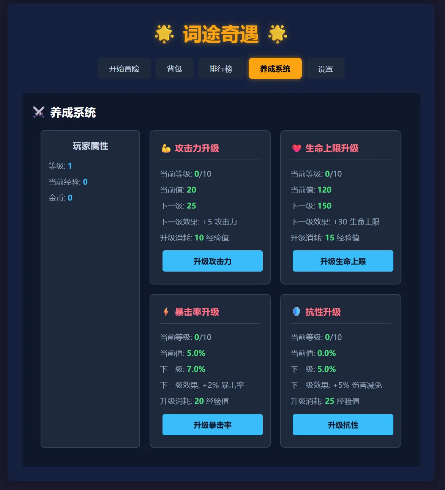
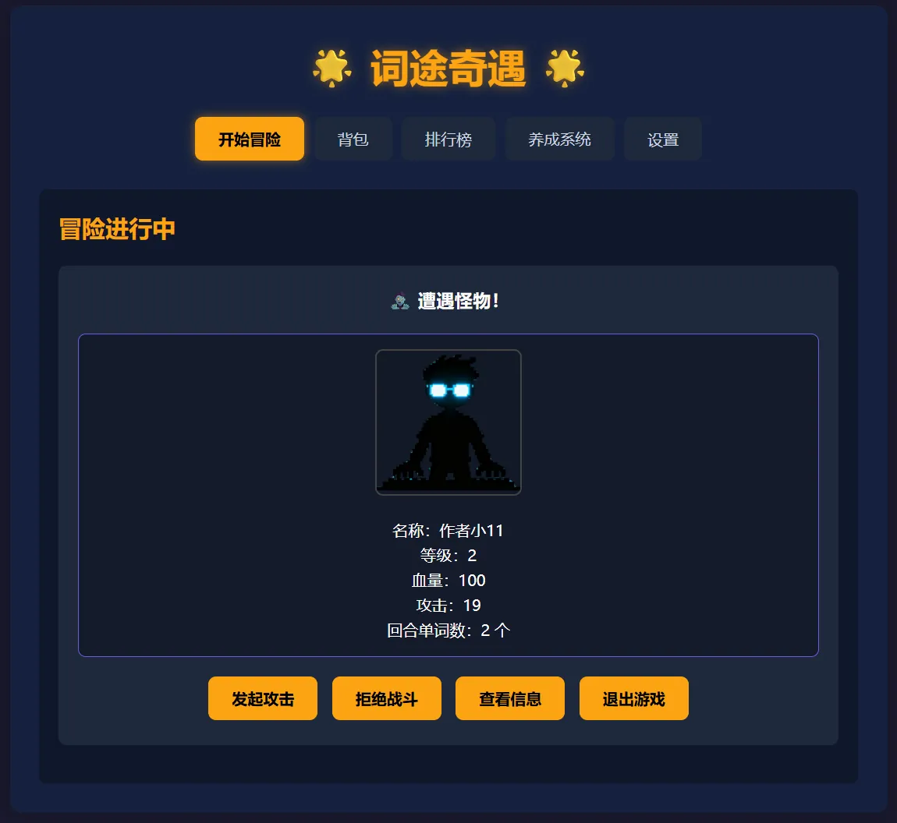
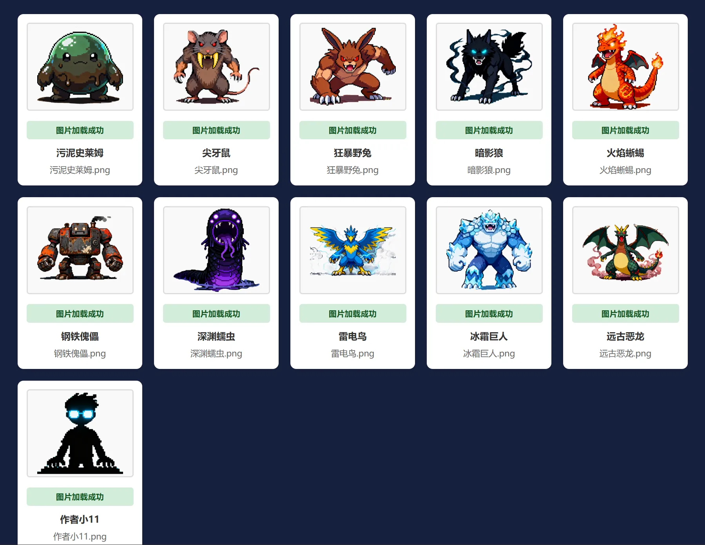
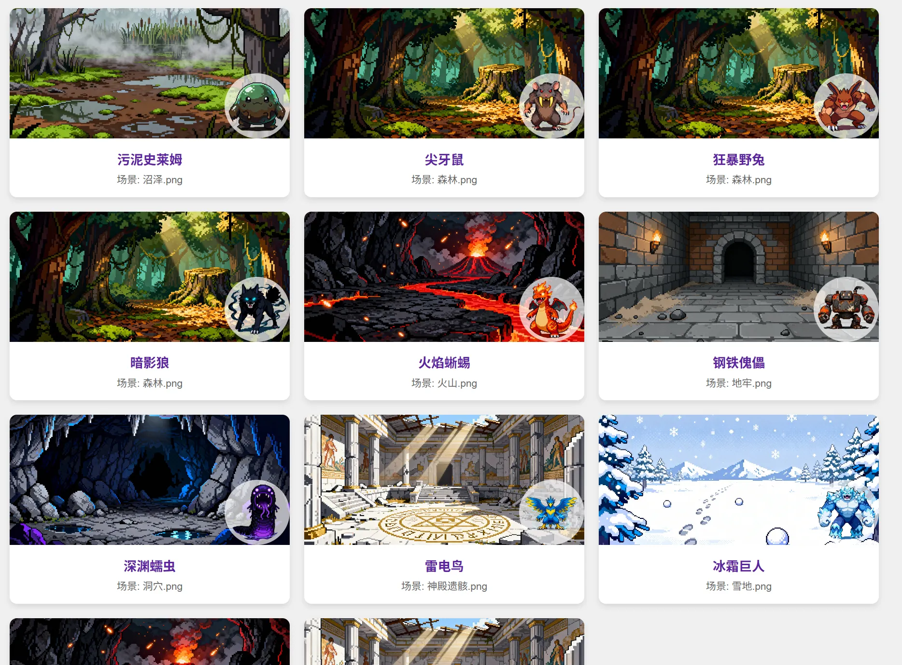
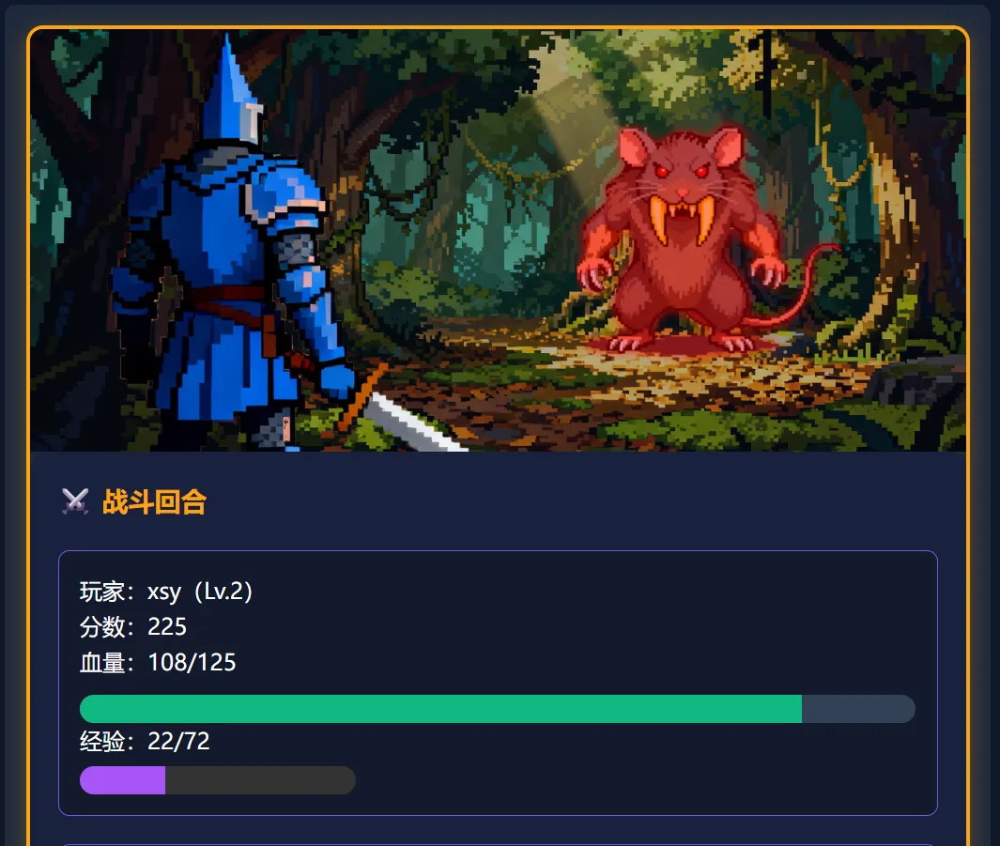
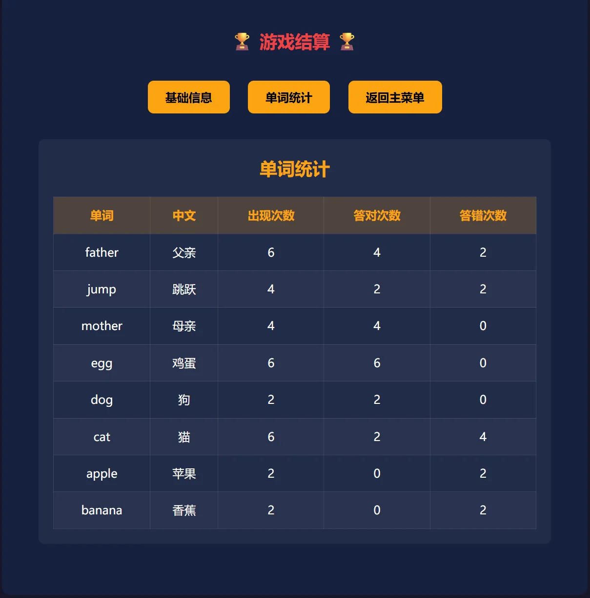

Case 03 / 08
词途奇遇
一个靠拼写英文单词来打怪的网页游戏，用来帮我记单词。它更像一次实验：我想知道把需求讲清楚之后， AI 到底能把一个完整项目做到什么程度——代码基本是它写的，需求拆解和验收是我的活。
概览与技术栈
玩法很简单：每回合屏幕上给出几个中文释义，把对应的英文单词拼出来，就能对怪物造成伤害； 拼错或者拼不出来，就轮到怪物反击。规则不新鲜，但拼写这件事必须自己动手完成，比一遍遍 看单词表印象深得多——至少对我自己是这样的。
做它的真正动机不是背单词。2025 年下半年「vibe coding」这个词刚出现，我想知道把功能描述 清楚之后，AI 能把一个完整项目推到什么程度。做完的结论是：它能做的比我当时自己写的多得多， 但前提是我得先把话说清楚——需求模糊的地方，它给的代码也就是模糊的。
整个项目是纯前端，没有任何后端和构建工具，所有逻辑都跑在浏览器里；代码拆成了 15 个原生 JavaScript 模块，靠全局模块对象串起来。自定义单词表、养成进度和排行榜都存在 localStorage 里， 关掉页面再打开还在。这也是我第一次接触「自己的数据怎么持久化」这个问题。
这段经历对我最大的影响不在这个游戏本身，而是两件后来一直在用的能力：一是把一个大功能拆成 一句能说清的小需求；二是读别人写的代码——中间有几次 AI 改坏了一个函数，json配置不上，只展示默认的单词，我得自己找出是哪一步 开始不对，这比从头写一遍更锻炼人。
技术栈
- 运行方式
- 纯前端网页游戏，不需要后端，也不需要构建工具
- 代码组织
- 15 个原生 JavaScript 模块，无框架，通过全局模块对象调用
- 数据存储
- localStorage 保存自定义单词、养成进度与排行榜
- 音频
- 菜单与战斗两套背景音乐，带淡入淡出与音量设置
- 工具
- Trae
截图与演示
截图按当时的测试顺序排下来：主菜单、养成面板、遭遇怪物，接着是一段实际战斗的录屏， 最后是素材图鉴和结算统计。视频默认不加载也不自动播放，点了播放按钮才会开始下载。






技术文档
这个项目的代码不是我逐行写的，所以这里不贴代码截图，改说几个当时来回调整出来、 我觉得值得记下来的实现点。
随机抽词用的是洗牌，不是随机取下标。 每回合要从单词库里抽若干个词。词库模块用的是 Fisher-Yates 洗牌——把整个词库打乱之后取前 N 个。 相比「随机取下标再去重」，这样每个词被抽到的概率严格相等，也不会出现同一个词在一回合里重复出现。 这也是我第一次知道「随机」本身还有好坏之分。
自定义单词库单独用单例管理。 用户自己导入的单词交给一个专门的模块，用单例模式保证全局只有一份数据，从 localStorage 里读写。 导入时同时兼容「英文,中文」和单行英文两种格式，会自动去重，之后按难度筛选取词。 这是整个项目里跟用户数据打交道最多的一块，也是出错最多的一块。
怪物数值跟着玩家等级走。 生成怪物时，等级在玩家等级上下浮动一级、最低 1 级；难度由等级推出来（1 到 3）；这一回合要拼 几个单词又由难度决定（1 到 3 个）。也就是说打得越往后，一回合里的单词数越多——难度是长出来的， 不是写死的。
伤害由正确率换算，答错也会被记录。 每回合按答对的比例换算成伤害倍率，答得越准打得越狠。同时每个单词的出现次数、答对次数和答错 次数都会被累计下来，结算时汇总成上面那张表——这个设计是后来加的，因为发现自己总在同样的 几个词上翻车。
养成数值要有上限。 攻击、生命、暴击、抗性四类升级各自最多 10 级，暴击率和抗性再额外卡在 50%。加这个上限是因为 前期没有它的时候，把暴击堆满就变成了看动画。也是从这里开始，我意识到数值设计需要考虑「失控」。
音频得绕开浏览器的自动播放限制。 音频模块负责菜单和战斗两套背景音乐的切换，带淡入淡出和音量记忆。但浏览器不允许页面一打开 就出声，播放必须等到用户第一次交互之后才行。这类「浏览器不让你干的事」我原本完全不知道， 是 AI 在代码里加了处理、我追问才弄明白的。
导航链接
这个项目目前只在我自己电脑上跑，没有公开的代码仓库，也还没有部署到线上，所以这里暂时 没有可以点的链接。想试玩的话可以直接找我要一份。
- 代码仓库
- 暂无公开仓库
- 在线试玩
- 暂未部署